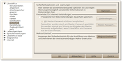

Vorlagen und Makros
Dieser Artikel wurde für die folgenden Ubuntu-Versionen getestet:
Ubuntu 14.04 Trusty Tahr
Vorlagen¶
LibreOffice unterstützt Dokumentenvorlagen. Diese sind an ihrer Dateierweiterung erkennbar:
Text: *.ott
Tabelle: *.ots
Präsentation: *.otp
Zeichnung: *.otg
LibreOffice bietet viele vorgefertigte Vorlagen auf der Webseite templates.libreoffice.org  zum Herunterladen an; genauso kann aber auch das OpenOffice-Vorlagenprojekt genutzt werden. Vorlagen können über das Menü "Datei" -> "Neu" -> "Vorlagen" verwendet werden, wenn sie sich in einem der beiden Standard-Verzeichnisse befinden:
zum Herunterladen an; genauso kann aber auch das OpenOffice-Vorlagenprojekt genutzt werden. Vorlagen können über das Menü "Datei" -> "Neu" -> "Vorlagen" verwendet werden, wenn sie sich in einem der beiden Standard-Verzeichnisse befinden:
| Standard-Verzeichnisse für Vorlagen | ||
| Bezeichnung | Pfad | Erklärung |
| Benutzervorlagen (im Homeverzeichnis) | ~/.config/libreoffice/4/user/template | Nur der einzelne Benutzer kann auf diese Vorlagen zugreifen. Soweit LibreOffice noch in der Version 3 verwendet wird, lautet der Pfad ~/.config/libreoffice/3/user/template. Bis Ubuntu Version 11.10 lautete der Pfad ~/.libreoffice/3/user/template. |
| Systemweite Vorlagen (Mehrbenutzersystem) | /usr/lib64/libreoffice/share/template/de (64-Bit-System) | Dieser Pfad sollte gewählt werden, wenn (mehrere Benutzer) auf dieselben Vorlagen zugreifen sollen. Root-Rechte sind dazu erforderlich. Bei 32-Bit-System lautet er /usr/lib32/libreoffice/share/template/de. Wurde LibreOffice manuell installiert, lautet der Pfad /opt/libreoffice4.0/share/template/common. Achtung: bei Namensgleichheit eines Ordners, einer Vorlage oder des Titels in den Dateieigenschaften ("Datei -> Eigenschaften -> Beschreibung -> Titel") werden die Vorlagen des jeweiligen Benutzers nicht angezeigt, ein Umbenennen der Vorlagen für alle Benutzer verhindert dies. |
Vorlagen, die in einem Unterordner (z.B. ~/.config/libreoffice/4/user/template/Bildung) liegen, werden in einer Kategorie angezeigt, die dem Namen des Unterordners entspricht. Vorlagen, die in einem Unter-Unterordner liegen, werden überhaupt nicht angezeigt.
Um die beim Programmstart verwendete Standardvorlage zu ändern (entspricht bei Microsoft Word der Datei "normal.dot"), muss man zunächst eine entsprechende Vorlage erstellen. Dazu erstellt man zunächst eine leere Datei, verändert dann die gewünschten Einstellungen, wie z.B. die Standard-Schriftart in den Absatzvorlagen, und speichert das Dokument über "Datei" -> "Als Vorlage speichern". Im Dialog "Dokumentvorlagen verwalten" ("Datei" -> "Neu" -> "Vorlagen") muss man die gewünschte Vorlage dann anwählen und den Knopf "Als Standard setzen" verwenden.
Makros¶
|  |
| Sicherheit |
Unter "Extras -> Optionen -> LibreOffice -> Sicherheit" kann die Makrosicherheitsstufe angepasst werden. Standardmäßig ist Sicherheitsstufe "Hoch" eingestellt. Das bedeutet, dass nur (signierte) Makros aus vertrauenswürdigen Quellen ausgeführt werden. Eigene Makros werden daher zunächst nicht ausgeführt. Dies kann man ändern, indem man den Button "vertrauenswürdige Quellen " anklickt und unter "Hinzufügen " den Ordner auswählt, in dem sich die eigenen Makros befinden.
- Erstellt mit Inyoka
-
 2004 – 2017 ubuntuusers.de • Einige Rechte vorbehalten
2004 – 2017 ubuntuusers.de • Einige Rechte vorbehalten
Lizenz • Kontakt • Datenschutz • Impressum • Serverstatus -
Serverhousing gespendet von